Vanderbilt · Learning Series · ATD facilitator guide · print edition
Start Smarter, the facilitator guide

Run of show
| Screen | Full (min) | Core (min) |
|---|---|---|
| Welcome / QR | 3 | 2 |
| What you'll get | 2 | 1 |
| The Chancellor's charge | 3 | — |
| The plan | 1 | — |
| 01 · What is AI? | 3 | 1 |
| Play · Is that AI? | 4 | 2 |
| Manifesto | 2 | 1 |
| 02 · Why & how | 3 | 2 |
| Play · Pick the next move | 4 | 2 |
| 03 · When & when not | 4 | 2 |
| Play · Green, yellow, or red? | 4 | 3 |
| 04 · What it can do | 3 | 1 |
| Play · Match the superpower | 4 | 2 |
| The impact | 3 | 1 |
| The impact · Watch | 2 | 1 |
| 05 · Your first try | 9 | 6 |
| Recap quiz | 3 | 1 |
| Capstone · My first try | 4 | 1 |
| Closing · commitment | 2 | 1 |
| Total | 63 | 30 |
Audience
Absolute beginners: staff who have never opened an AI tool, or who tried once and gave up. No prerequisites of any kind. Also delivered self-paced via the /web/ edition. Any size room works; 8 to 30 is the sweet spot.
Room setup
Projector + presenter device; learners on their own devices via the Welcome-slide QR. Ideal but optional: learners able to reach a Vanderbilt-approved AI tool (Copilot with VU sign-in) on their own devices for the first-try moment. Virtual: run everything on main stage; breakouts unnecessary at this level. Tone matters more than tech: warm, unhurried, zero jargon, no question too basic.
Materials
- Projector or large display and the facilitator link open (this edition)
- Facilitator laptop with arrow keys or clicker; all notifications off
- Learner devices (BYOD) joining via the welcome-slide QR
- A Vanderbilt-approved AI tool (Copilot, VU sign-in) open in a second tab for the live demo
- A few printed cheat sheets (cheatsheet.html) for anyone without a device
- Printed first-try cards (worksheet.html) as the no-device and projector-failure fallback
A week before
- Read this guide end to end, then run BOTH editions (classroom and /web/) start to finish, doing every exercise.
- Rehearse the live demo once: type a deliberately vague request into Copilot, then improve it with the room's details. Know what 'bland' looks like so you can count on it.
- Make your own first try on a real chore if you haven't. Your story of it ('took me four minutes, the follow-up fixed the tone') is the most persuasive slide you have.
- Decide your path: Full (60) or Core (30, the lunch-and-learn length).
- Remember who this room is: people who may feel behind, embarrassed, or skeptical. The session's real job is removing fear.
The day before
- Test the projector with the facilitator link; confirm the notes rail is readable from where you'll stand.
- Scan the welcome QR from the back of the room with your own phone; it must land on the learner edition.
- Sign into the approved AI tool and leave the tab ready.
- Print 5 to 10 cheat sheets and first-try cards.
- Re-read the tough-questions bank; say the 'is AI going to take my job?' response out loud once.
30 minutes before
- Welcome slide up as people arrive; it does the enrolling for you.
- Close every other tab and app; silence the machine.
- Test arrow-key navigation and one interaction (run a round of Is That AI?).
- Set the tone in your head: this is the friendliest hour in the catalog. No jargon leaves your mouth today.
When things go sideways
If Projector or the site fails mid-session: Teach from the printed cheat sheet: the one-sentence definition, the three steps, the traffic light, and the five superpowers all work on a whiteboard. The trainers run verbally with hands-up voting; the first try moves to the printed card.
If Learner devices can't join (wifi/filters): Run facilitator-only: trainers on the projector with the room voting out loud, prompt builder as a fill-in-the-blanks on the whiteboard, commitment on the printed card. You lose typing, not learning.
If Nobody in the room can access an approved AI tool for the live try: You demo on the projector with THEIR prompts: collect two built prompts from the room, run them live on your machine, improve each with one follow-up the room chooses. The first try becomes homework with the card; the pulse email catches it.
If Someone is visibly anxious or says 'I'm too old for this / not a tech person': The reframe that works: 'You already use AI every day: your phone's word suggestions, your spam filter. Today is just learning to use it on purpose.' Then make sure their first try lands in the room; success beats reassurance.
If An experienced AI user is bored or starts adding advanced caveats: Honor and redirect: 'That's exactly right, and it's AI 201 material: the sequel is in the Course Library.' Deputize them as a table helper for the prompt-builder moment; teaching beginners keeps experts happy.
If Fear talk takes over ('AI is dangerous / taking jobs / stealing data'): Don't dismiss, anchor: the traffic light exists exactly because the concerns are partly right. 'The risks are real, which is why we use approved tools and keep people-data out. The skill you're learning today IS the safe version.' Park policy debates; route them to the official channels.
Tough questions, ready answers
Q: Is AI going to take my job?
AI takes over chores, not judgment: drafts, summaries, first passes. What history shows with tools like this is that people who use them become more valuable, not less. Today's hour is exactly that move: you're not competing with AI after this session, you're the person in your office who knows how to use it safely.
Q: Is it cheating to use AI for my work emails?
Is spellcheck cheating? Is asking a colleague to read your draft cheating? AI is a drafting tool; the thinking, the facts, and the final call stay yours. The professional standard is simple: you review everything, you check what matters, and your name means you stand behind it. Passing off unchecked AI output as finished work: that's the actual mistake.
Q: Where does what I type actually go?
It depends entirely on the tool, and that's the whole point of the yellow light. Random free websites may keep and learn from what you type. Vanderbilt-approved tools like Copilot with your VU sign-in have contractual protections for work content. That's why internal content only goes in approved tools, and private information about people goes in none of them.
Q: How do I know if the answer is true?
Assume it's a confident draft, not a verified fact. For anything that matters, a date, a number, a name, a claim you'll repeat, check the source the way you would if a smart new colleague told you something surprising. The tool is at its safest on tasks where truth isn't the question: drafting, rewording, brainstorming, explaining.
Q: Which tool should I actually use?
For work content: Microsoft Copilot signed in with your VU account: that sign-in is what makes it yellow-light safe. For public, generic questions, approved tools of your choice. If you're unsure whether a tool is approved, that uncertainty IS your answer: use Copilot or ask IT.
Q: I tried ChatGPT once and the answer was wrong or useless. Why bother?
One try with one vague question is like judging email by one message. Two fixes change everything: give it details (who it's for, what it's about, how it should sound), and use the follow-up: tell it what was wrong and watch it fix its own draft. The trainer in Idea 02 exists because the second message is where the tool gets good.
Copy-paste templates
Pre-work invite (paste into the calendar invite)
Subject: Before our Start Smarter session. Nothing to read and nothing to install. Just bring one thing: a chore from your normal week that involves words: an email you put off, a long document you need to digest, anything you'd love to hand to an assistant. You'll use it in the session. If you've never touched an AI tool, you're exactly who this hour is for.
7-day pulse (send one week after)
Subject: One week later, did the first try happen? Two quick lines, reply whenever: 1) Did you run the prompt you built, on the chore you named? 2) Did the follow-up trick (add one detail, ask again) make it better? Replies come to me only. Not yet? Your card still works, this note is your nudge, and the whole thing takes five minutes.
Graduation note (send to confident finishers)
Subject: Ready for the next gear? You've made your first tries and the traffic light is a habit. AI 201: Beyond the Basics is the sequel: why tools 'forget,' where answers actually come from, and how to build a governed AI workflow for a recurring task. It's in the Course Library, same format, no code: ../../../
After the session
Seven days out, send the pulse: 'Did you make your first try? What was the chore, and did the follow-up trick work?' The count of completed first tries is the program's headline metric: this course exists to convert non-users into first-time users. Route the confident ones to AI 201 in the Course Library.
Welcome / QR Full 3 min · Core 2
Get every learner into the experience on their own device and set the tone: the friendliest hour in the catalog, built for absolute beginners.
Say
“Welcome. Point your camera at that code, it brings this whole session to your seat. Quick promise before we start: this is the beginner hour. No jargon, no code, no assumptions, and no question is too basic. If you have never touched an AI tool in your life, you are not behind, you are exactly who this session is for, and you'll make your first try before the week is out.”
Do
- Have this slide projected as people arrive.
- Point at the QR and get phones up before you say anything else.
- Say the safety line early: no jargon today, no question too basic, and nobody will be asked to know anything.
- Confirm by show of hands that most of the room has the site open before advancing.
Ask
“Show of hands, totally judgment-free: who here has never used ChatGPT, Copilot, or any AI chat tool, or tried once and quietly gave up?”
Expect:
- A third to half the room, sometimes sheepishly
- A few 'tried once and gave up' confessions
- Some experienced users too
Respond: Thank the honest hands warmly: 'Perfect: this hour was built for you.' To the experienced: 'You're my table helpers today, and AI 201 is your course; it's in the library.'
Validate: 80%+ of the room has the deck open on a device.
Watch for: The person hanging back who 'isn't a tech person.' Make eye contact, smile, and remember them for the first-try moment: their success is the session's best story.
Transition: “Here's everything you'll walk out with.”
Core path: Core: one scan prompt, the no-jargon promise, move on.
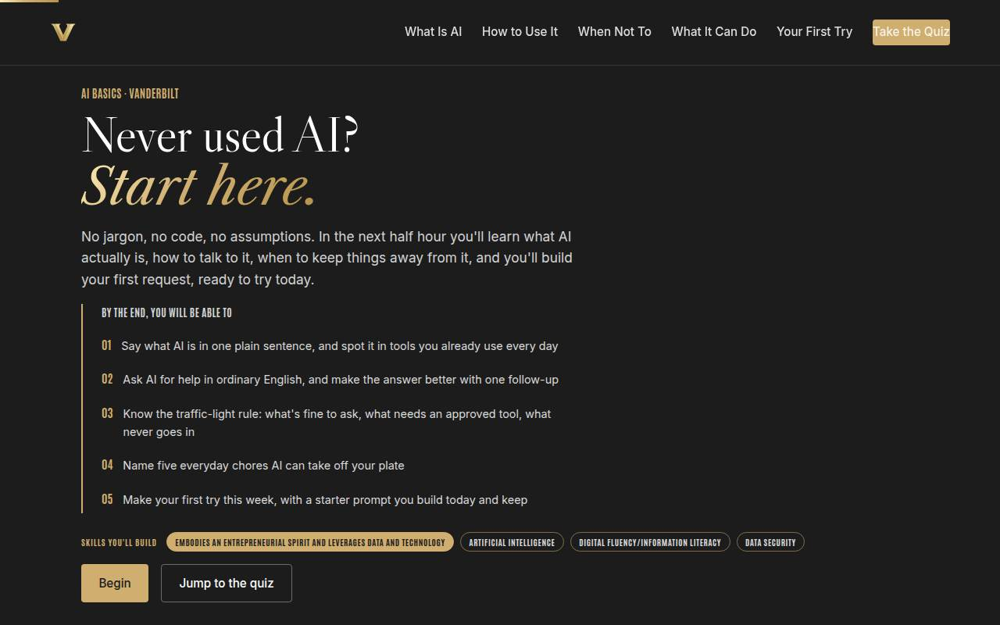
What you'll get Full 2 min · Core 1
Set the contract: five plain-language abilities, ending in a real first try with a prompt they build themselves.
Say
“Five things in the next hour. You'll be able to say what AI is in one sentence, no buzzwords. You'll know how to ask it for help in ordinary English, and the one trick that makes answers good. You'll know the traffic light: what's fine, what needs an approved tool, what never goes in. You'll know the five chores it does best. And before we're done, you'll build your first request for a real chore from your real week, and copy it, ready to use.”
Do
- Read the five objectives in plain language, unhurried.
- Land on the last one: you leave with a real prompt you built, for a real chore, with a day attached.
- Point at the skills row once: this course carries real skill credit in the library.
Validate: Learners can say what they'll leave with (a prompt they built + a first try scheduled).
Watch for: Don't oversell or speed up; calm confidence is the register for beginners.
Transition: “The whole plan fits on one slide.”
Core path: Core: objectives 1 and 5 out loud; the rest on screen.
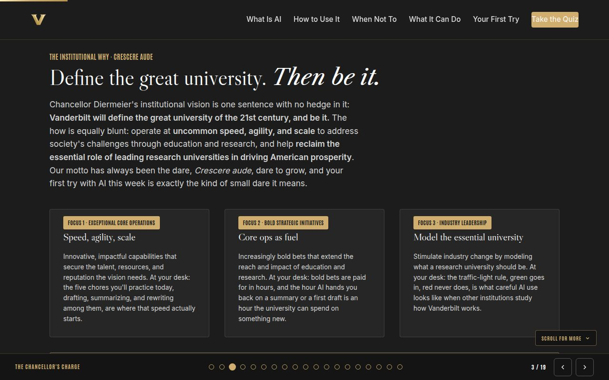
The Chancellor's charge Full 3 min · Core skip
Anchor the hour in the institutional why: the Chancellor's vision makes a beginner's first AI try part of how the university grows.
Say
“One minute on why Vanderbilt cares about this hour. Chancellor Diermeier's vision is a single sentence: Vanderbilt will define the great university of the 21st Century and be it. Doing that takes speed and careful bets, and both are made of ordinary work: the drafts, summaries, and rewrites on desks like yours. Your first try this week is a small piece of that. Our motto is literally 'dare to grow.'”
Do
- Read the vision sentence off the slide verbatim; let it land before you talk.
- Walk the three focus cards left to right, one breath each, ending on the 'At your desk' line.
- Point at the flywheel card and keep it plain: good work builds reputation, reputation brings resources, and safe everyday AI use is part of good work. Don't teach it; move.
Transition: “That's the why over our shoulder. Here's the plan for the hour.”
Core path: Core: read the vision sentence, gesture at the three focus areas, move on; under a minute.
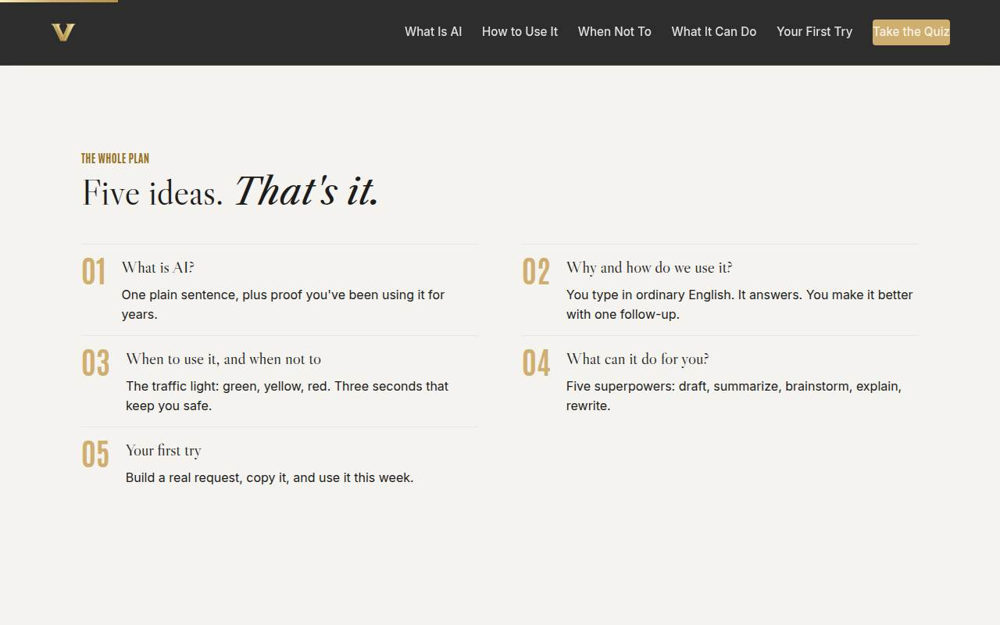
The plan Full 1 min · Core skip
Show the five ideas once so the room sees how small the mountain actually is.
Say
“Five ideas. That's the whole course: what AI is, how to use it, when not to, what it can do for you, and your first try. Small mountain.”
Do
- Walk the five items in one breath each.
- Name the shape out loud: what it is, how to use it, when not to, what it does, then you try it.
Validate: None needed; this is orientation.
Watch for: Don't teach here; every idea has its own slide.
Transition: “Idea one: and I promise it fits in one sentence.”
Core path: Core: skip entirely; the deck's structure carries it.
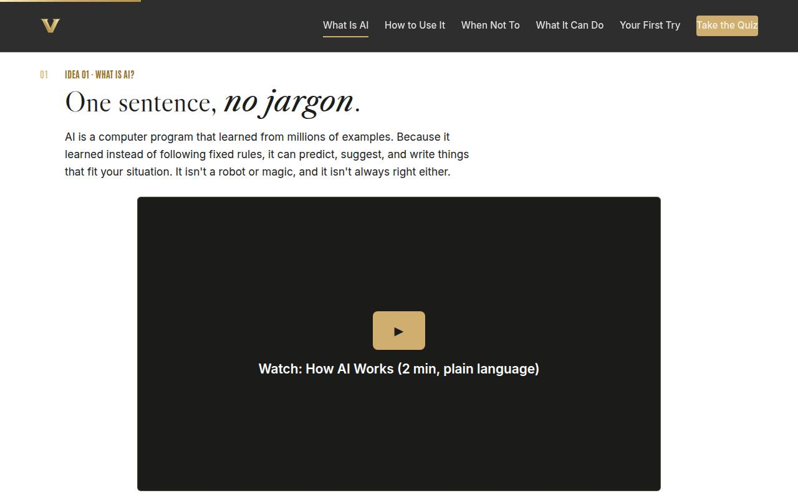
01 · What is AI? Full 3 min · Core 1
Land the one-sentence definition (a program that learned from examples) and dissolve intimidation by proving everyone already uses AI daily.
Say
“Here's the whole definition, one sentence: AI is a computer program that learned from millions of examples, so instead of following fixed rules, it can predict, suggest, and write things that fit your situation. That's it. It's not a robot. It's not magic. And it's not always right, think of it as a very well-read assistant: fast, tireless, eager to help, and occasionally confidently wrong. Now the fun part: you've been using AI for years. Let's prove it.”
Do
- Deliver the one-sentence definition slowly, twice: a program that learned from millions of examples.
- Land the three nots: not a robot, not magic, not always right.
- Run the group shout-out from Go deeper: name one thing on your phone that guessed something about you this week.
- Land the reframe: you aren't AI beginners; you're experienced users who never got the name tag.
Ask
“Name one thing on your phone that guessed something about you this week.”
Expect:
- Word suggestions while texting
- Maps rerouting, music and show recommendations
- Photos grouping faces, spam filtering
Respond: List them fast, then point at the list: 'Every one of those learned from examples. You aren't AI beginners: you're experienced users who never got the name tag. Today we just make it deliberate.'
Debrief: A program that learned from examples: capable because it learned, fallible because it guesses. Both halves matter all session.
Validate: 4+ of 5 on the trainer for most of the room; the shout-out round produces at least four examples.
Watch for: Jargon creeping into YOUR mouth ('model,' 'training data,' 'LLM'). The discipline of this session is saying 'it learned from examples' every single time.
Transition: “Now prove to yourselves you've been using it for years. Next screen: the game.”
Core path: Core: definition + three nots, trainer as a fast room vote, shout-out becomes one example from you.
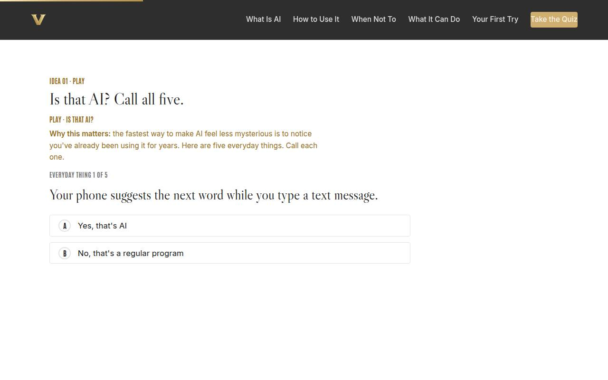
Play · Is that AI? Full 4 min · Core 2
One scored rep of the definition: learned-from-examples versus regular program, on five everyday things.
Say
“Five everyday things. For each one: did it learn from examples, or is it following rules a person wrote? Call it.”
Do
- Send them to their devices: five everyday things, call each one.
- Run it as a room vote if devices are down; hands for 'AI' versus 'regular program.'
- The calculator item is the teaching moment: fixed rules never surprise you; learned patterns do.
Validate: 4+ of 5 for most of the room.
Watch for: Anyone scoring 2 or less quietly: the debrief line ('learned = AI') usually fixes it on the retry.
Transition: “So AI is already in your pocket. One more sentence before we learn to drive it.”
Core path: Core: run it as a fast room vote on the projector.
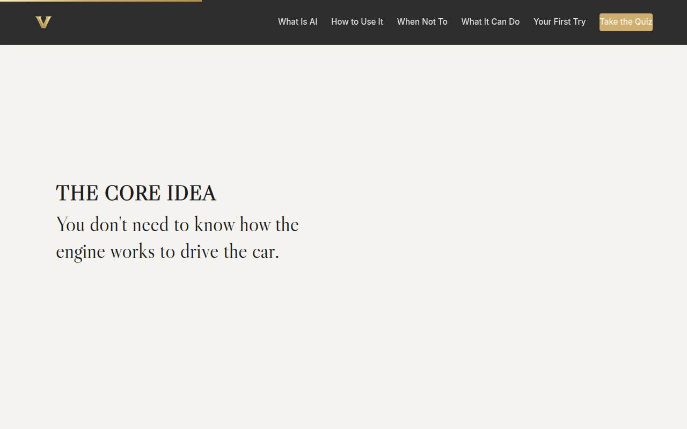
Manifesto Full 2 min · Core 1
Give beginners explicit permission to use AI without understanding its internals. This one line removes the biggest hidden barrier in the room: the belief that AI is for technical people.
Say
“You don't need to know how the engine works to drive the car. Here's what that means. Every one of us drove or rode here today, and almost none of us could explain a combustion engine, and that's fine, because driving and engineering are different skills. AI is the same. Asking it for help, reading the answer, making it better: that's driving, and you'll be doing it within the hour. How it works inside is engineering, and it's genuinely optional. If anyone in this room has been thinking 'I'm not a tech person, this isn't for me,' this sentence is for you. You don't need to be. You just need a steering wheel, and we're about to hand you one. One honest footnote: drivers do follow rules of the road, and AI has three. They're colors, they take three seconds, and they're coming up right after you learn to drive.”
Do
- Let the line animate word by word. Say nothing until it finishes, then read it once, slowly.
- Explain what it means in one breath: millions of people drive safely every day without being able to explain a combustion engine. Using a tool well and understanding its insides are two different skills, and today only asks for the first one.
- Map the analogy for them explicitly: the car is the AI tool. Driving is asking, reading the answer, and improving it. The rules of the road are the traffic light coming two slides from now. The engine (how AI works inside) is a fine thing to learn someday, and AI 201 teaches it, but nobody needs it to get to work today.
- Name who the line is for: anyone in the room quietly thinking 'I'm not a tech person.' This sentence is the course giving them permission to start anyway.
Ask
“Quick show of hands: who here can explain exactly how their car engine works? And who drove here anyway?”
Expect:
- One or two engine hands, the whole room on the second question
- Laughter, which is the point
- Someone jokes about electric cars
Respond: Land it gently: 'That gap between the two hands is exactly the permission slip this course runs on. Competence first. Curiosity about the engine later, if you want it. AI 201 pops the hood.'
Debrief: Using AI well is a driving skill, not an engineering skill. The rules of the road come next.
Validate: Ask for a nod: does anyone here understand their car engine? Almost nobody. Do you all drive? Everybody. Point made.
Watch for: The one caveat worth saying if an expert pushes back: drivers still follow rules of the road. The line doesn't mean 'use it carelessly.' It means the safety rules (coming next) are learnable in minutes, while engine knowledge is optional.
Transition: “So let's drive. Here's how you actually use it.”
Core path: Core: read the line, give the one-breath explanation, move on. Keep the explanation even at 30 minutes; it does real work for nervous beginners.
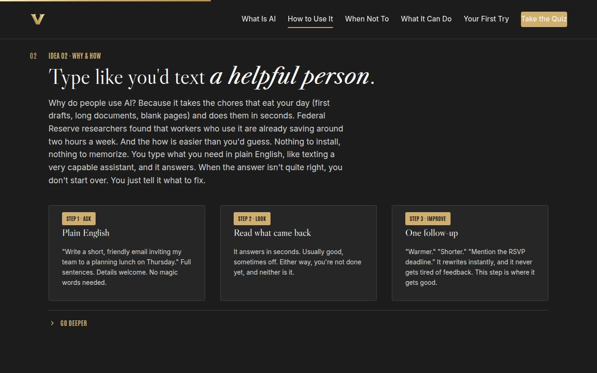
02 · Why & how Full 3 min · Core 2
Install the three-step loop (ask in plain English, look, improve with one follow-up): the single skill that separates people who love AI from people who gave up.
Say
“Why do people use this? Because it takes the chores that eat your day (first drafts, long documents, blank pages) and does them in seconds. And how? You type what you need in ordinary English, like texting a very capable assistant. Full sentences, details welcome, no magic words. Then the part almost nobody tells beginners: when the answer isn't quite right, you don't start over and you don't give up. You just tell it what to fix. 'warmer,' 'shorter,' 'mention the deadline': and it rewrites instantly. Watch this live.”
Do
- Walk the three cards: ask in plain English, look at the draft, improve with one follow-up. Stress: nothing to install, nothing to memorize.
- Run the live demo on the projector: type a deliberately vague request into the approved tool, let the room see the bland result, then type their suggested details as the follow-up and watch it improve.
- Land the two habits from Go deeper: details make the difference, and the first answer is always a draft.
Ask
“During the demo: this answer is bland. What details should I add? Shout them out.”
Expect:
- Who it's for, what it's about
- Make it friendly / shorter / add the date
- Someone dictates a full sentence: type it verbatim
Respond: Type their exact words, send, and let the improvement land in silence for a beat. Then: 'Same tool. Better conversation. That's the entire skill, and you all just did it.'
Debrief: Ask, look, improve. And the quiet fourth step that keeps you safe: check anything important, because confident and correct are not the same thing.
Validate: 4+ of 5 on the trainer; the room visibly reacts to the live demo's before/after.
Watch for: Beginners concluding the vague first answer means the tool is bad. Narrate explicitly: 'Same tool, better conversation: the second message is the skill.'
Transition: “Your turn. Five moments, five moves: next screen.”
Core path: Core: three cards fast, demo shrinks to one exchange, trainer as room vote.
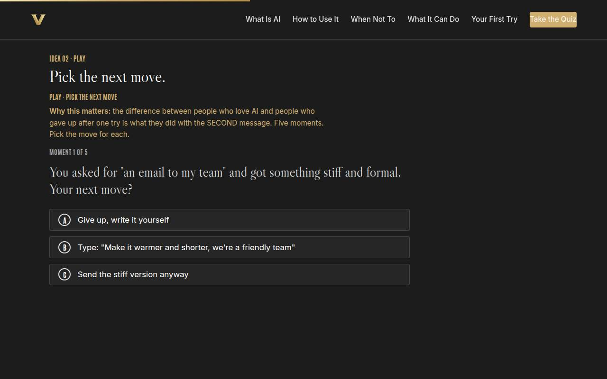
Play · Pick the next move Full 4 min · Core 2
One scored rep of the ask-look-improve loop, especially the follow-up habit that separates users from quitters.
Say
“Five moments where the first answer wasn't perfect. Pick what a confident user does next. Notice how often the answer is just 'tell it what to fix.'”
Do
- Send them to their devices: five moments, pick the best next move.
- Item 4 (the wrong date) plants the fact-checking habit; name it in the debrief.
- Collect one aha out loud at the end.
Validate: 4+ of 5 for most of the room.
Transition: “You now know how to drive. Time for the rules of the road.”
Core path: Core: run it as a fast room vote on the projector.
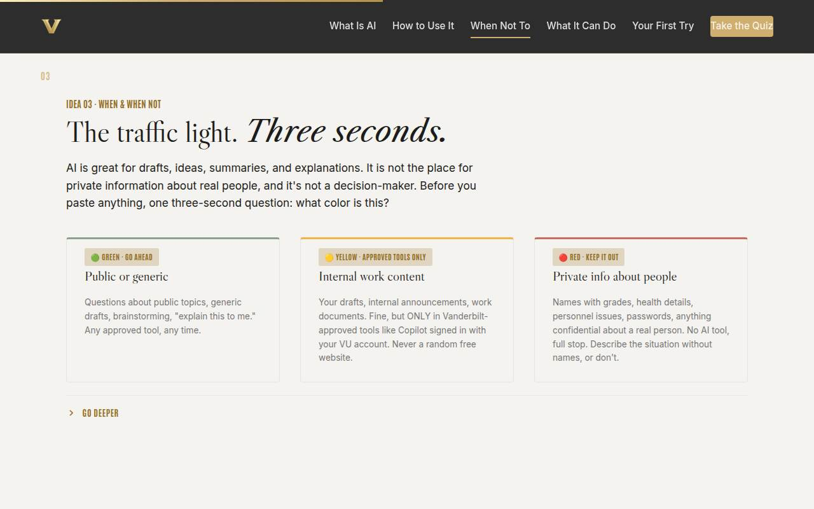
03 · When & when not Full 4 min · Core 2
Install the traffic light as a three-second reflex (green/yellow/red) plus the fact-checking habit: the session's entire safety payload.
Say
“AI is wonderful for drafts, ideas, summaries, and explanations. It is not the place for private information about real people, and it's not a decision-maker. So here's the only safety system you need, and it takes three seconds: before you paste anything, ask: what color is this? Green: public or generic, go ahead. Yellow: internal work content: fine, but only in Vanderbilt-approved tools, like Copilot signed in with your VU account. Never a random free website. Red: private information about real people: names with grades, health details, personnel issues. That never goes in. Describe the situation without the names, or don't use AI for it. Let's practice until it's a reflex.”
Do
- Walk the three cards slowly; this is the most important slide of the hour.
- Make yellow concrete: name the approved tool (Copilot with VU sign-in) and the anti-example (a random free website).
- Make red vivid: names with grades, health, personnel issues. The fix: describe the situation without names, or don't.
Ask
“Popcorn round: name a real task from your week, and the room calls the color.”
Expect:
- Easy greens: icebreakers, explanations, generic drafts
- Yellows: internal announcements, meeting notes
- A juicy borderline: 'summarize my performance review notes'
Respond: Let the room rule; only referee. On the borderline one: 'Hear the debate? That hesitation is the skill working. When in doubt: leave the names and details out: or leave it out entirely.'
Debrief: Three colors, three seconds, plus one more habit: check any fact that matters, because AI sounds confident even when it's wrong. That's the entire safety course.
Validate: 4+ of 5 on the trainer; quick check correct; the popcorn round shows the room calling colors without your help.
Watch for: The borderline debates ARE the learning: let two run for thirty seconds each. And keep the tone empowering, not scary: the light exists so they can use AI confidently, not so they fear it.
Transition: “Time to drill it. Five situations: call the color.”
Core path: Core: three cards + trainer stay (this is the safety payload), quick check stays, popcorn round becomes two examples.
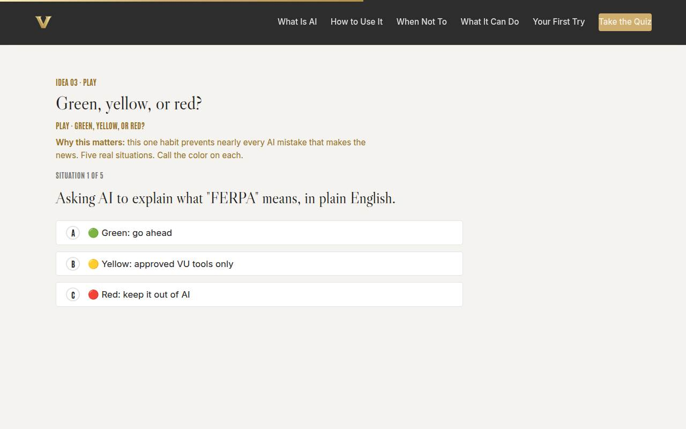
Play · Green, yellow, or red? Full 4 min · Core 3
Drill the traffic light to reflex on five real situations, then lock the fact-checking rule with the quick check.
Say
“Five real situations. Three seconds each: green, yellow, or red? The one you hesitate on is the one worth talking about.”
Do
- Send them to their devices: five situations, call the color.
- The performance-review item is the discussion magnet; let the debate run thirty seconds.
- Run the quick check on the same screen: the other big don't is trusting unchecked facts.
Validate: 4+ of 5 and a correct quick check.
Transition: “Rules down. Now the fun part: what this thing can actually do for you.”
Core path: Core: keep at nearly full length; this is the safety payload.
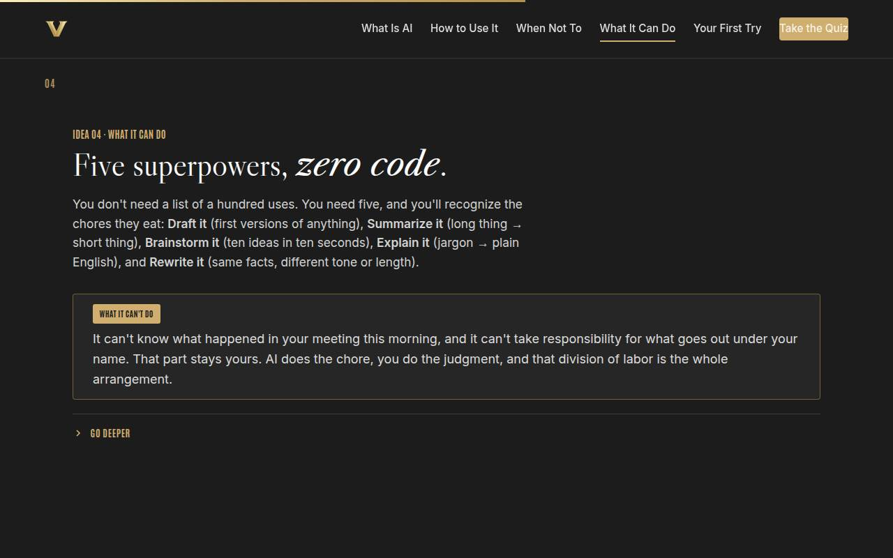
04 · What it can do Full 3 min · Core 1
Install the five superpowers (draft, summarize, brainstorm, explain, rewrite) and get every learner to pick the chore for their first try.
Say
“You don't need a list of a hundred AI uses. You need five, and you already recognize the chores they eat. Draft it: the email you've been putting off. Summarize it: the fourteen-page PDF and the four minutes you have. Brainstorm it: ten name ideas in ten seconds, you keep the two good ones. Explain it: the jargon-filled IT instructions, translated to human. Rewrite it: same facts, friendlier voice, half the length. And the honest card: it can't know what happened in your meeting, can't be trusted blind on facts, and can't take responsibility. It does the chore. You do the judgment.”
Do
- Name the five superpowers with one everyday example each; keep the language chore-shaped, not tech-shaped.
- Read the 'what it can't do' card out loud. That honesty earns trust: no knowledge of your morning, no blind trust on facts, no responsibility.
- Run the pair round from Go deeper: the ONE chore you'd most love to hand off, matched to its power.
- Tell them to hold onto that chore: the next slide builds the request for it.
Ask
“The one chore from your week you'd most love to hand off: what is it, and which superpower eats it?”
Expect:
- Status emails and updates → Draft it
- Long documents and policies → Summarize it
- Naming things, meeting ideas → Brainstorm it
Respond: Collect a handful and match them out loud, fast and affirming. Then: 'Hold onto yours. In two minutes you're building the exact request for it.'
Debrief: Five superpowers, one honest boundary: AI does the chore, you do the judgment. And everyone in this room just picked their first chore.
Validate: 4+ of 5 on the trainer; every learner has named their chore (it feeds the first-try builder).
Watch for: Vague chores ('emails, I guess'). Push gently for THE one: the monthly update they dread, the policy doc they never read. Specific chores make real first tries.
Transition: “Your turn to match. Five chores: next screen.”
Core path: Core: five powers in one breath each, trainer as room vote, pair round becomes a ten-second silent pick.
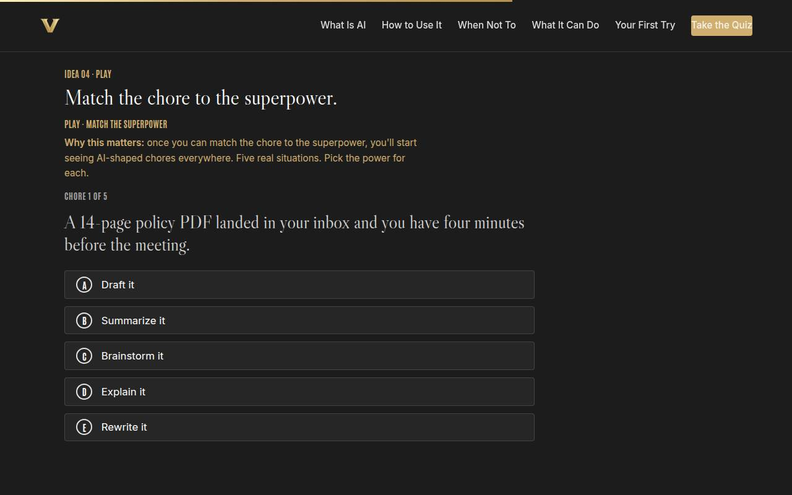
Play · Match the superpower Full 4 min · Core 2
One scored rep matching real chores to the five superpowers, priming each learner's own first-try chore.
Say
“Five chores you'll recognize. Match each to its superpower, and while you play, keep asking: which chore of mine is next?”
Do
- Send them to their devices: five chores, pick the power.
- As they finish, ask them to silently pick THEIR chore for the first try.
- Collect two or three chores out loud with their matched power.
Validate: 4+ of 5; every learner has a chore in mind.
Transition: “Hold that chore. First, sixty seconds on why this is bigger than saved time.”
Core path: Core: run it as a fast room vote on the projector.
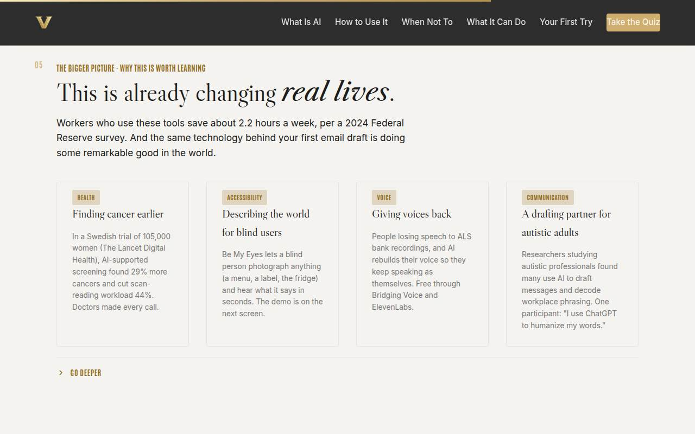
The impact Full 3 min · Core 1
Give the room a reason to care that's bigger than saved minutes: cited, true stories of AI helping in health, accessibility, voice, and communication, all sharing the pattern the course teaches (AI does the chore, a person stays in charge).
Say
“Before your first try, here's why this is worth ten minutes of learning. The time savings are real and measured: Federal Reserve researchers found workers who use these tools save about two hours a week. But the numbers aren't the good part. In Sweden, doctors screened over a hundred thousand women for breast cancer with AI helping them read the scans. They found 29 percent more cancers, and the radiologists got 44 percent of their reading time back to spend where it mattered. That's published in The Lancet. A blind person can now photograph a menu or a medicine label and hear exactly what it says, free, through an app called Be My Eyes. People losing their voices to ALS are banking recordings so AI can rebuild their voice, and they keep speaking as themselves. And autistic professionals tell researchers they use these same chat tools to draft messages and decode workplace phrasing. One participant put it in words I can't beat: 'I use ChatGPT to humanize my words.' Notice what every story has in common: the AI does the chore, and a person stays in charge. The doctors made every diagnosis. That is exactly the arrangement you're learning today.”
Do
- Name the efficiency number first, with its source: a 2024 Federal Reserve Bank of St. Louis survey found workers who use these tools save about 2.2 hours in a 40-hour week.
- Walk the four story cards in one or two sentences each. Every card carries its source link; say the sources out loud (The Lancet, Be My Eyes, Bridging Voice, a peer-reviewed study of autistic professionals) because citations build trust with skeptics.
- Run the popcorn question: which story surprised you most?
- Land the pattern explicitly: in every story the AI does a chore and a person stays in charge. Doctors read the scans, patients choose their words. Same arrangement they're learning today.
Ask
“Which of those four stories surprised you most, and why?”
Expect:
- The cancer numbers, usually with 'I had no idea it was already real'
- The voice banking story, often from someone touched by ALS
- The autism quote, because it reframes who these tools are for
Respond: Take two or three, no commentary needed. Close with: 'Whichever one stuck with you, keep it. It's a better answer to "why bother with AI?" than any statistic, including the Fed's.'
Debrief: Two hours a week back for you, and for some people, a voice, a diagnosis, or a menu read aloud. The pattern is always the same: AI does the chore, a person stays in charge.
Validate: Quick check correct; two or three voices in the popcorn round. Watch the room's posture change during the video; that shift is this slide's real output.
Watch for: A grief response: someone in the room may have lost a person to cancer or ALS. Keep the tone warm and factual, never triumphant. And don't oversell: these are assist stories, not cure stories, and saying so keeps your credibility.
Transition: “Now watch it happen. Two minutes, next screen.”
Core path: Core: the Fed number, the four cards in one breath each, and the pattern line. Assign the Be My Eyes video as the week's watch if time is tight, but it's only two minutes; keep it if you possibly can.
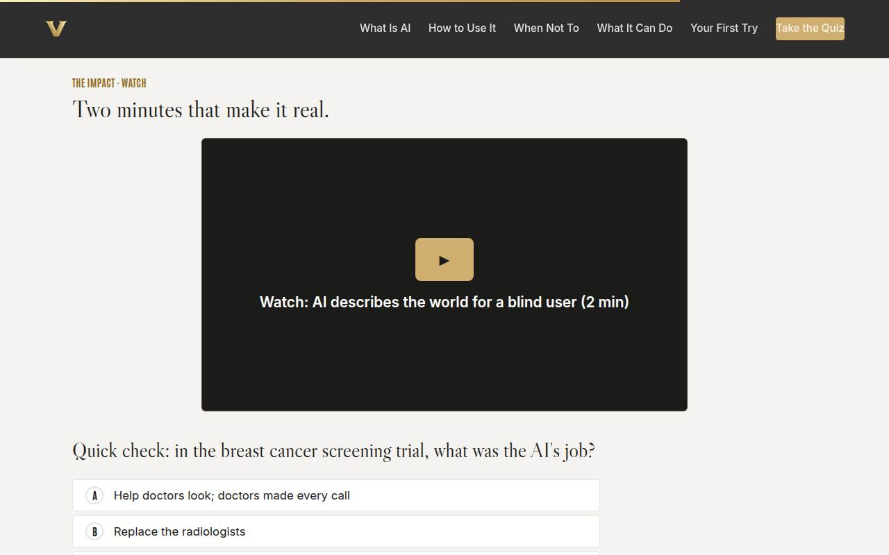
The impact · Watch Full 2 min · Core 1
Let the Be My Eyes video land emotionally, then lock the human-in-charge pattern with the quick check.
Say
“Two minutes. Watch what this technology means for someone who can't see the menu.”
Do
- Play the video (2 minutes). Let it finish in silence for a beat.
- Run the quick check: in the cancer trial, the AI helped doctors look; doctors made every call.
- One line to close: same arrangement you're getting today, smaller stakes.
Validate: Quick check correct; the room's posture during the video tells you the rest.
Transition: “Your chore is smaller than any of that. Let's build your request.”
Core path: Core: keep the video if you possibly can; it's two minutes and it's the session's heart.
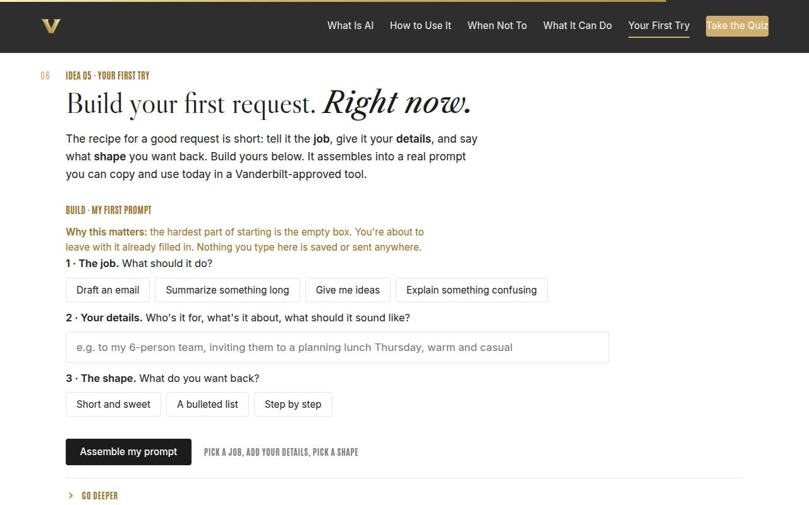
05 · Your first try Full 9 min · Core 6
Every learner assembles a real, copyable prompt for their real chore: and ideally runs it in the room. This is the session's conversion moment.
Say
“Here's the whole recipe for a good request. Tell it the job: draft an email, summarize this, give me ideas, explain this. Give it your details: who it's for, what it's about, what it should sound like. And say what shape you want back: short, bullets, step by step. Job, details, shape. That's everything. Build yours right now, for the chore you just picked: and when you hit assemble, you're holding your first prompt. The empty box, the hardest part of starting? You just left with it filled in.”
Do
- Teach the recipe in one line: the job, your details, the shape. That's the whole anatomy of a good request.
- Give quiet time on the builder: pick the job, type the details for THEIR chore, pick the shape, assemble, copy.
- Circulate for the stuck: their details just need who it's for, what it's about, how it should sound.
- If devices allow, run the in-room first try: paste into the approved tool, send, hands up when answers arrive.
- Have two volunteers read results aloud: deliberately including one mediocre one, improved live with one follow-up.
- Point at the Go deeper: where to go (Copilot, VU sign-in) and the two moves (add a detail; check what matters).
Ask
“For the volunteers who ran it: read us what came back. Was it good, or does it need the follow-up?”
Expect:
- A surprisingly good draft, delight in the voice
- A mediocre one, which is the gold: improve it live
- Someone got a wrong detail, which is even better: the checking lesson, live
Respond: For the good one: 'Four minutes ago that was a blank box.' For the mediocre one: ask the room what detail to add, run the follow-up live, watch it improve. For the wrong detail: 'And THAT is why we check what matters: you just saw the whole course in one answer.'
Debrief: Job, details, shape: then add a detail if it's close, and check it if it matters. You now know everything this course has to teach; the rest is reps.
Validate: Every learner has an assembled, copied prompt. If devices allowed, most ran it. This is the objective-5 evidence and the session's core outcome.
Watch for: Perfectionism stalling the builder. 'good enough, send it' is the coaching. And celebrate the mediocre live result loudly: improving it with one follow-up is a better lesson than a perfect first answer.
Transition: “Quick knowledge check, then you make it official.”
Core path: Core: recipe in one line, builder at full length (protect it, it IS the outcome), in-room try only if devices are instant, one volunteer read-aloud.
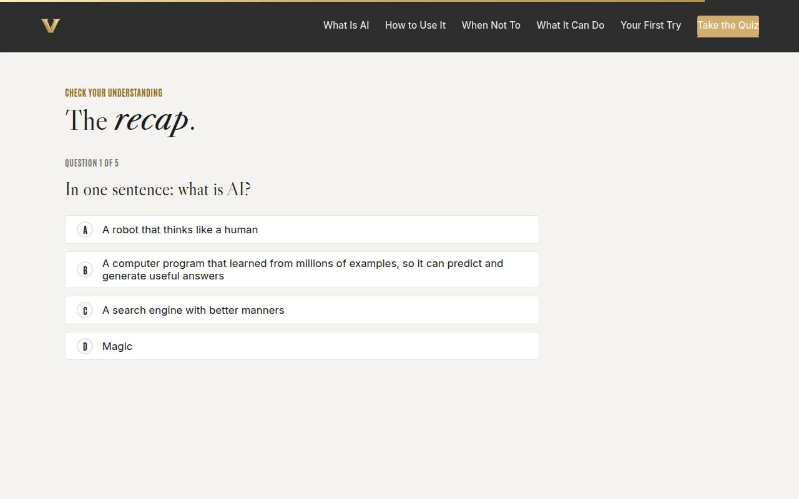
Recap quiz Full 3 min · Core 1
Score the five ideas before the commitment (Kirkpatrick Level 2).
Say
“Five questions, one per idea, zero pressure. This is just proof of how much you picked up in an hour.”
Do
- Everyone takes it on their own device, all five questions.
- Ask for hands on 4-or-better; celebrate briefly.
- For any question the room visibly missed, do a 30-second reteach from the relevant slide.
Validate: Room mode at 4/5 or better. The quiz maps to the five ideas, so misses tell you exactly what to reteach.
Watch for: Racing. Frame it as a friendly check, not a test: this room may carry test anxiety about tech topics.
Transition: “And now the only part that changes next week.”
Core path: Core: run it as a fast room vote on the projector, two questions max, rest assigned.
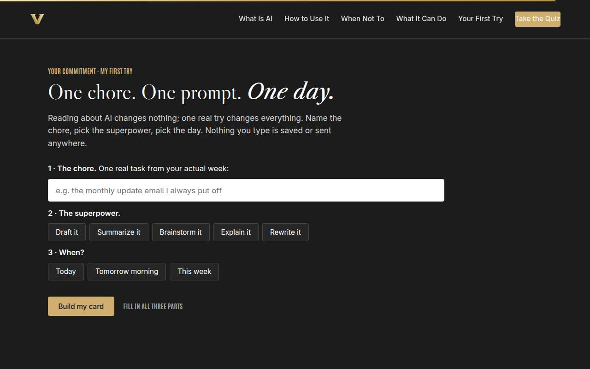
Capstone · My first try Full 4 min · Core 1
Convert the session into one dated commitment: the chore, the superpower, the day. The transfer artifact and the 7-day pulse's target.
Say
“Name the chore: the real one. Pick the superpower. Pick the day, and I'll tell you now: today beats tomorrow, and tomorrow beats 'this week.' Your prompt is already built; the card just puts a date on it. That's the entire distance between someone who heard about AI and someone who uses it.”
Do
- Frame it: reading about AI changes nothing; one real try changes everything.
- Give quiet time: chore typed, superpower picked, day picked, card built and copied.
- Push for 'today' or 'tomorrow': first tries scheduled for 'someday this week' evaporate.
- Remind: nothing typed is saved or sent; the card is theirs.
Validate: Every learner builds a card (all three parts). The card plus the 7-day pulse is the evidence chain, and the pulse's first-try count is the program metric.
Watch for: The chore quietly shrinking to something trivial. The best first try is the chore they named in Idea 04: the one they actually resent.
Transition: “Last slide. Go time.”
Core path: Core: build the card in sixty focused seconds; it survives every cut.
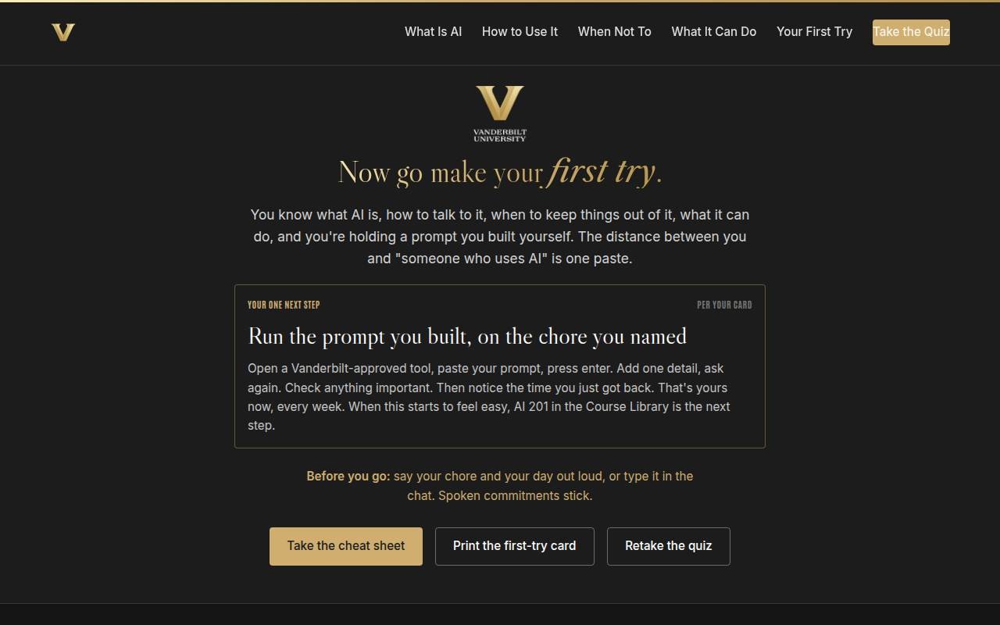
Closing · commitment Full 2 min · Core 1
Convert cards into spoken commitments, capture the Level 1 check, and point at the follow-up and the next course.
Say
“One hour ago, AI was a headline. Now it's a sentence you can say, a traffic light you can run, five superpowers you can name, and a prompt in your clipboard with your name on it. Before you go: your chore, and your day. Out loud. Spoken commitments stick: and when that first answer comes back, remember, you're one follow-up away from good.”
Do
- Read the featured card: run the prompt, add one detail, check what matters.
- Run the fist-to-five (Level 1): 'How confident are you that you'll make your first try?' Note the number for your log.
- Run the commitment round, popcorn style: chore and day, out loud or in chat.
- Point at the cheat sheet and first-try card buttons, and AI 201 for the ones who are hungry.
- Tell them the 7-day pulse is coming, land the last line, stop on time.
Ask
“Around the room, one line each: your chore, and your day.”
Expect:
- 'The monthly update email: today.'
- 'Summarizing the policy doc: tomorrow morning.'
- Someone commits to explaining IT's last email
Respond: Thank each one, no commentary, keep it moving. If someone says 'this week': 'Which day?': warmly, but get the day.
Debrief: The metric isn't in this room; it's the 7-day pulse: how many first tries actually ran. This course exists to turn non-users into users, one chore at a time.
Validate: Fist-to-five mostly 3+ (Level 1); a majority state chore-and-day out loud or in chat. With the pulse, that's the evidence chain.
Watch for: Cards without a day. The round catches them (no day, no commitment); help them pick one on the spot.
Transition: “Go make the try. And when it saves you twenty minutes, tell a colleague who's where you were an hour ago: the QR travels.”
Core path: Core: fist-to-five plus a lightning commitment round; the ending survives every cut.
Generated from facilitator/notes.json. The on-screen facilitator edition lives at ./ alongside this guide.